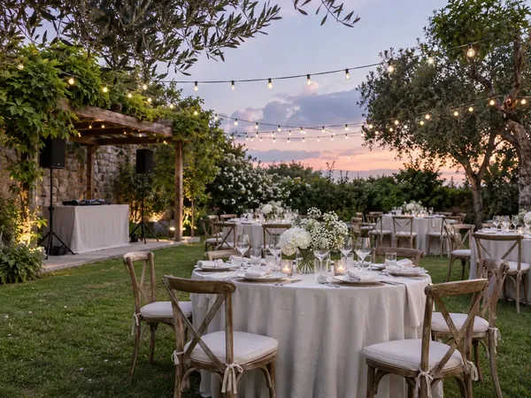

DJ para vuestra boda
Música para el día de vuestra boda, pensada con vosotros desde el primer mensaje.
Pedir presupuesto para nuestra boda
El día, momento a momento
La música de cada momento
Qué momentos cubre Rayco en cada evento: [PENDIENTE: confirmar con Rayco]
Ceremonia
La entrada, los anillos y la salida, con la música que elijáis.
Cóctel
Música de fondo para saludar a los invitados y hacer fotos.
Barra libre
La fiesta: la pista abierta hasta la última canción.
Lo técnico
- Sonido e iluminación
- Micrófonos para los discursos
[PENDIENTE: qué equipo lleva Rayco]
La música
- Estilos: [PENDIENTE: confirmar]
- Idiomas en los que atiende: [PENDIENTE: confirmar]
Cómo trabajo
Así lo preparamos
- Primero
Hablamos
Me cuentas qué celebras, la fecha, el lugar y cuántos invitados esperas.
- Después
Preparamos la música
Vemos juntos el estilo y las canciones que no pueden faltar.
- El día
Disfrutas la fiesta
Tú disfrutas con tus invitados; de la música me ocupo yo.
Dudas
Lo que más se pregunta
¿Qué zonas cubres?
Trabajo en Tenerife. [PENDIENTE: zonas o municipios de la isla que cubre]
¿Con cuánta antelación reservo?
[PENDIENTE: antelación recomendada]
¿Pones la música que pedimos?
Preparamos la música juntos antes del evento. [PENDIENTE: cómo trabaja las peticiones de canciones]
¿Llevas equipo de sonido?
[PENDIENTE: qué equipo lleva: sonido, iluminación, micrófonos]
¿Tenéis fecha?
Vosotros celebráis; la música, en buenas manos. Cuéntale a Rayco qué celebráis, cuándo y dónde, y te responde personalmente.
Pedir presupuesto para nuestra boda